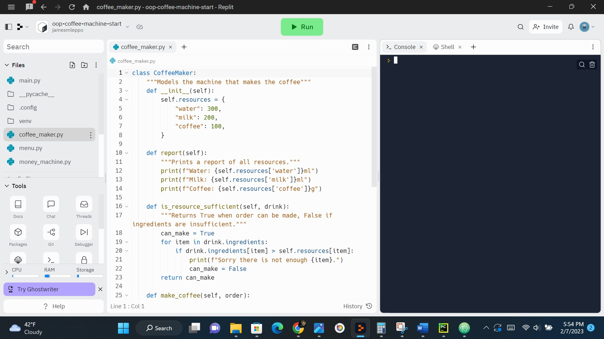

Object Oriented Programing is a way of structuring programs bundling properties and behaviors. This is the way I built my different projects from scratch. I have had the pleasure of creating many games in python such as connect 4, snake, trivia games, pong, and tic tac toe to name a few. OOP is a way of modeling things in the real world making programing an exciting field of study. I have learned to build functions that make up classes to complete tasks.
I have also used object oriented programming to create many more python projects. I have learned to give objects functionality and have built projects that utilized API and python libraries. I've used many IDE's and text editors to write code. My favorite one for python is Pycharm.